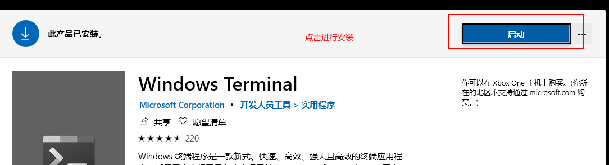
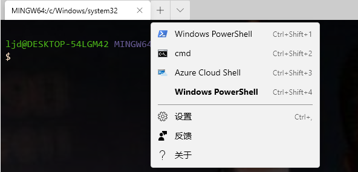
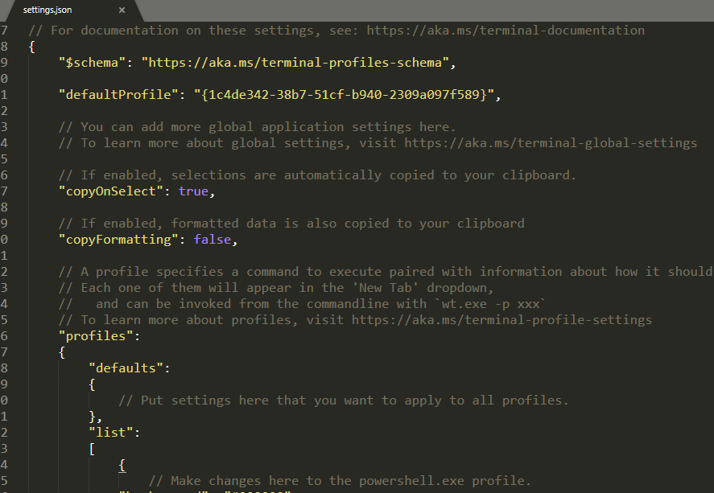
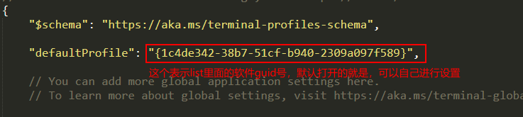
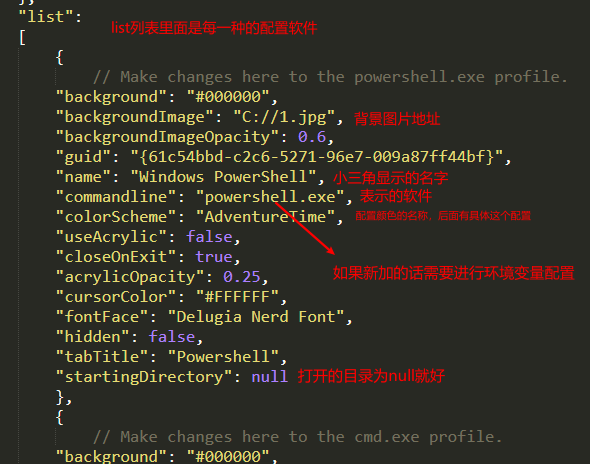
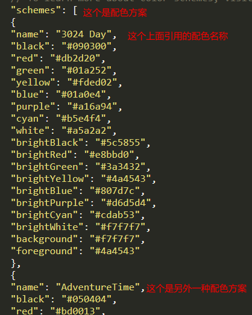
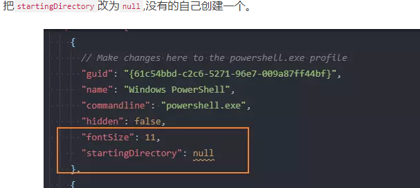
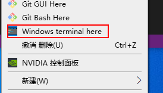
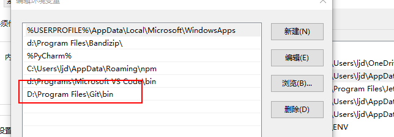
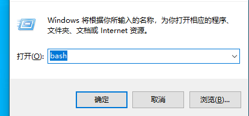

windowsTerminal配色以及右键
1.安装windowsTerminal 在windows应用商店搜索windows Terminal

然后打开windows Terminal如下所示

我们可以看到这个界面，这个是配置好的。点击右边小三角可以看到设置点击打开配置。

可以看到是个json的配置文件，配置就在这个文件里面进行配置。


具体的后边会演示git bash的演示。

具体的配色方案，网上有很多，最主要就是三个地方的配置，其他的配置内容可以自己看看。
b、右键windows Terminal
首先在shell中输入如下代码：
echo %USERPROFILE%
echo %LOCALAPPDATA%
查看输出的路径，注意自己本地的路径，对后边的[username]进行替换！
创建图标
创建文件夹：
mkdir "%USERPROFILE%\AppData\Local\terminal"在local目录下创建了一个terminal文件夹，把下载下来的ico突变复制到这个文件夹。图标下载地址：ico图标下载
写入注册表 是重点
右键 将下面内容复制到reg去.新建一个后缀为reg的文件，将下面的代码复制到里面去，注意更换路径地址。然后执行
Windows Registry Editor Version 5.00
[HKEY_CLASSES_ROOT\Directory\Background\shell\wt]
@="Windows terminal here"
"Icon"="%USERPROFILE%\\AppData\\Local\\terminal\\wt_32.ico"
[HKEY_CLASSES_ROOT\Directory\Background\shell\wt\command]
@="C:\\Users\\[user_name]\\AppData\\Local\\Microsoft\\WindowsApps\\wt.exe"
记得要在window terminal文件配置中加入

最后右键就可以看到：

c、windows Terminal 加入gitbash
配置环境变量后进行配置。

配置好后，在shell运行窗口中中输入bash就会打开gitbash软件。
